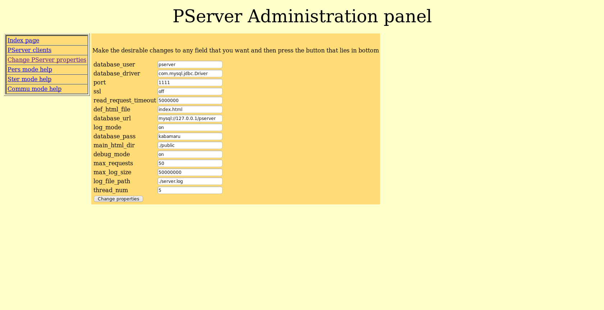
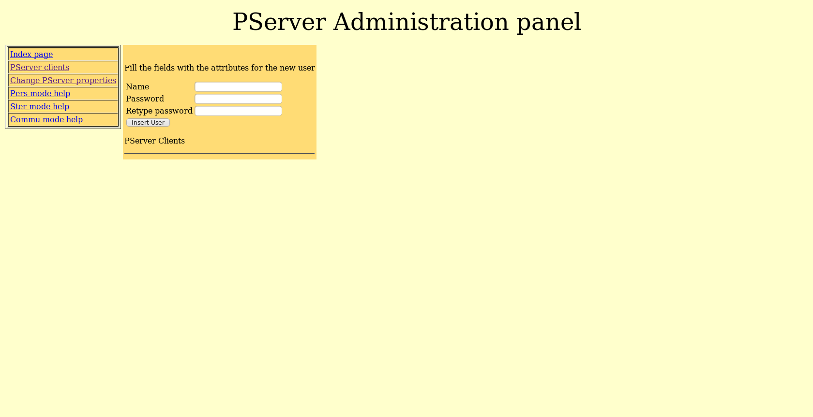

Manual of PServer version 1.0
PServer is an application that is developed from the National Center of Scientific Research “Demokritos” of Greece and is a general purpose personalization server. So PServer is a program with functionality that can be used by different kind of applications that need to provide personalized facilities.
1. Technical characteristics
PServer is designed to be platform and application independent, that means it can run on different operating systems and can provide generic personalization services to application that the content is unknown. To accomplish this tasks PServer's implementation has been done with the programming language Java and without any usage of operating system API and is usable under any known operating system that has a port of Java virtual machine version 1.5+. We have tested PServer under Linux, Windows and Solaris and works perfectly. PServer needs a RDBMS to store its data and we have chosen MySQL (version 5+) which is a very mature , open source and has a version for all the known operating systems software. Furthermore to be platform independent PServer is designed to communicate over HTTP protocol. Applications can make simple HTTP requests that contains the parameters of the request and gather results through XML documents. This is pretty much the same way that RESTful web services works but it is even “lighter”. An Example of the HTTP request is this
http://127.0.0.1:1111/pers?clnt=test|test&com=addattr&testAttr=test”
We explain the syntax of commands later in this document but to avoid wondering this command requests from PServer to add a new attribute with the name testAttr and this attribute must has a default value test. The result is this XML document
<?xml version="1.0"?> <result> <row><num_of_rows>1</num_of_rows></row> </result>
It just tells that everything went well and there is a new record into the data base.
This design gives the opportunity to use PServer from applications that is written for specific operating systems with any programming language that supports just a tcp/ip socket library and can read UTF-8 characters.
2. User modeling
The main component of PServer is its data model because with that we have an abstract way to express users, likes, interests and apply (data mining) algorithms to extract information that can be useful to different kinds of applications. This model makes PServer application independent because we do not store any application semantics and we express different content types with generic types. The generic types that we use are
User: is the entity that we want to stores his/hers interests and likes
Feature: is any object the we want to express how much the user likes or he/she is interesting about. A user can express his like and interesting about a feature. We make this distinction because a user might be interesting about features that does not likes at all
Attribute: is any physical characteristic that a user has, for example age is a user attribute
User stereotype: is a group of users that have some common attributes. We use it for collaborating filtering. A user stereotype has users that belong to it and its profile is calculated by a mathematical formula (sum etc ) that takes input the user profiles that are part of the stereotype.
User communities: is a group of users that has common likes about features.
Feature group: is a group of features that many users like concurrently
PServer applications can define correlation between PServer objects like between features to create (user based) graphs where spreading activation algorithms can be used to infer implicit knowledge about profiles that we do not have explicit information.
3. Database
Bellow we describe the database tables of PServer's data base. In every table there is an extra field that we do not comment at every table because it has the same meaning. This field is
FK_psclient varchar(50)
and is used to determine the PServer client that uses this data. We wanted PServer to be accessible by many different application simultaneously and we had the need to define this field.
attributes
This table contains the user attributes
communities
This table contains the the user communities
community_associations
This table contains the correlations between user communities
community_feature_associations
This table contains the correlations between features of the user communities
community_profiles
This table contains the likes of a community
decay_data
This table contains logs about feature usage
decay_groups
This table contains groups of decay data. There is explanation about these data at PServer's command manual that can be accessed through html pages from PServer.
num_data
This table contains logs of feature like values
ftrgroups
This table contains the feature groups.
ftrgroup_features
This table contains the profile of feature groups. This is a binary array that defines the features that belongs to feature group and the features that don't.
pserver_clients
This table contains the applications that are registered to use the PServer.
stereotypes
This table contains the stereotypes that are needed by an application.
stereotype_attributes
This table contains the attribute values that consist the stereotype.
stereotype_profiles
This table contains the likes of a the Stereotypes.
stereotype_feature_associations
This table contains the correlations of a the Stereotypes.
stereotype_users
This table contains the users that belongs to a stereotype.
up_features
This table contains the features that are defined by the applications.
user_associations
This table contains the correlations of the users.
user_attributes
This table contains the values of user attributes.
user_community
This table contains the communities that users belong to.
user_feature_associations
This table contains the correlations of features for a user. If we want to describe correlations in general that is not personalized we leave the user field of this table with the empty string.
user_profiles
This table contains the likes of the users
user_interests
This table contains the interests of the users
user_sessions
This table contains the ids of the sessions that exist in tables decay_data and num_data
users
This table contains the users
4 Installation and configuration
As we have said PServer is implemented in Java and users MySQL as its RDBMS. That means that if you want to install PServer first you must have to install MySQL version 5+ and JVM version 1.5+. You can download these applications from the sites of MySQL and Sun for free. After the installation you must create a database for PServer and import the PServer's database script into MySql to construct the database. If you have a MySQL user with the name pserver and you have created a database with the name pserver then the command
mysql -u pserver -p pserver < pserver_db.sql
this will import the database script. After this you must configure PServer through the server.ini file that exists inside the root directory of PServer. Server.ini contains the following properties.
database_user=pserver
this parameter defines the user that is used by the PServer to connect to database
database_driver=com.mysql.jdbc.Driver
this parameters defines the jdbc driver that will be used to connect to database.
port=1111
this is the TCP port that PServer will bind to listen for requests.
ssl=off
this parameters defines if the communication will be done by secure shell mode.
read_request_timeout=5000
this parameters defines the maximum time in milliseconds that PServer will keep a connection open waiting for a request
main_html_dir=./public
Pserver is a simple HTTP server and can serve files. This parameter defines the directory that contains
def_html_file=index.html
this parameter contains the default name of the HTML file that PServer serves from its web content directory.
database_url=mysql\://127.0.0.1/pserver
this parameter defines the jdbc URL that is used to connect to database
log_mode=on
this parameter defines if it will be stored a log into a file
database_pass=kabamaru
this parameter defines the password for RDBMS user that is used to connect to database
debug_mode=on
This parameter defines if we want to log extra debug messages from the PServer
max_requests=50
This parameter defines the maximum requests that can be accepted concurrently.
max_log_size=50000000
This parameter defines the maximum log file size in bytes
log_file_path=./server.log
This parameter defines the file that log will be stored
thread_num=5
This parameter defines the maximum threads that can use PServer to execute processing. PServer might has to process a great amount of data and this takes time. We use threads for parallel processing to to speed up the server responses. These days every CPU has more than one cores and you have to parameterize PServer to use these cores. For an Intel Core 2 duo our experiments has shown that the performance is increased until 4 threads and for a Intel Core 2 quad until 5 threads. An I7 CPU has greater scaling but we do not have determine its limit yet.
If PServer has started properly you can change the above properties though the administration interface. Just open a browser type the HTTP URL that directs to PServer and you will see an image bellow.

The menu that exists at the left side of the screen has the administration options like help, change properties and manage PServer clients. The most important thing the last one because you need it to register you application to has access to make requests.

To register your applications just type a name that you want and give two times a desirable password. You must remember your password because it is kept encrypted into the database and can not be recovered.
Another important file is the pbeans.ini that contains definitions of Java objects that PServer must load on startup and their name that is used by the server. For example
pers=pserver.pservlets.Personal()
ster=pserver.pservlets.Stereotypes()
commu=pserver.pservlets.Communities()
admin=pserver.pservlets.Admin(admin,root,root)
csv=pserver.pservlets.Csv()
spr=pserver.pservlets.Spread()
cos=pserver.algorithms.metrics.CosineVectorMetric();
ps=pserver.algorithms.metrics.PearsonCorrelationMetric();
alexone=pserver.algorithms.graphs.AlexOne();
bk=pserver.algorithms.graphs.BK();
This tells the PServer to load objects of different classes (pbeans) that pserver will put into hash maps and can share their functionality through Java reflection. We will explain how to write pbeans and use them later for now just remember that any plug-in that you want to insert and use must be defined in this file with a unique name. The definition is done by typing a name the operator of equality and a class name. The parenthesis after the class name defines the pbean initialization parameters. The preinstalled pbean admin contains the functionality for the administration interface of PServer that we have shown before. It takes three parameters first the name that is defined into pbeans.ini, the login name (the first root) and the login password that user must type to make a successful log in. When you want to use the administration tool you have to provide these two words to gain access. If you want to change these words just make the changes here, save the file and make a restart of the PServer.
5. Make PServer requests
To make requests to PServer you must write a program that can open TCP sockets, write a HTTP request and knows how to parse XML documents. If you have a Java application you can use our class PSClientRequest that comes with the PServer package and does these things. If you don't you can read the code and make a port of this simple class for the language that you are using.
PServer is an HTTP application server that runs plug-ins (pservlet pbeans) that serves the requests and returns responses. Based on this logic the requests that you make to PServer has specific structure
http://url/<pbean_name>?clnt=name|pass&com=some_com¶m1=val1¶m2=val2...
first you define the URL that links to PServer, then the pservlet that you want to use and then the client name/pass that makes the request and the pservlet parameters. Every pservlet defines its own parameters. The pservlets that we have written has a common structure, they need to get a com parameter that defines the pservler command that needs to be called and then the parameters of the specified commands. pservlets can return any type of document (HTML,XML,JSON etc) but the ones that we have implemented and we use return XML. The admin pservlet is an exception, it returns HTML documents and this is needed to access it through a web browser. The XML that is returned is always structured like a 2d array. You can see the structure by reading the xsl files that we provide with PServer and exist in the resp_xsl folder inside the public folder. For example we are printing one of these
<?xml version="1.0"?>
<xsl:stylesheet xmlns:xsl="http://www.w3.org/TR/WD-xsl">
<xsl:template match="/">
<html>
<head>
<title>View from Table: up_features</title>
</head>
<body>
<br></br>
<h2>features and default values</h2>
<p></p>
<b>Tables:</b> up_features
<br></br>
<b>Description:</b> A selection of (feature, default value) pairs.
<p></p>
<table border="1" cellpadding="4">
<xsl:for-each select="result/row">
<tr>
<th>
<xsl:value-of select="ftr"/>
</th>
<td>
<xsl:value-of select="defval"/>
</td>
</tr>
</xsl:for-each>
</table>
<br></br>
<a href="/">Back to home</a>
<p></p>
</body>
</html>
</xsl:template>
these xsl files are used to provide formated output to web browsers. Type commands into a web browser (like Konqueror) and you will get results that sows the 2d arrays philosophy
Here is the XML document from the execution of the command
http://127.0.0.1:1111/pers?clnt=test1|test1&com=getusrs&whr=*
<?xml version="1.0" encoding="UTF-8" ?>
<?xml-stylesheet type="text/xsl" href="/resp_xsl/user.xsl"?>
<result>
<row><usr>1</usr></row>
<row><usr>10</usr></row>
<row><usr>100</usr></row>
….
<row><usr>194</usr></row>
<row><usr>195</usr></row>
<row><usr>196</usr></row>
<row><usr>197</usr></row>
<row><usr>198</usr></row>
<row><usr>199</usr></row>
<row><usr>2</usr></row>
</result>
Inside the public folder of PServer there are subdirectories that contains help about every implemented pservlet and its API.
To make this call and print the results with the PSClientRequest Java class you will need the code bellow
PSClientRequest request = new PSClientRequest( InetAddress.getLocalHost(), 1111, command, true, 10000 );
for( int i = 0 ; i < request.getRows() ; i ++ ) {
System.out.println( request.getValue( i, 0 ));
}
There is full documentation about the methods that PSClientRequest provides at the Java docs that are bundle with the PServer
6. Implement a PServlet
To implement your own pservlet you must create a Java class implement the pserver.pservlets.PService interface. This interface has the following methods
public abstract String getMimeType();
this method returs the MIME type of the document that your pservlet returns. For example text/xml if you want to return XML documents.
public abstract void init( String[] params ) throws Exception;
this method will be called when the PServlet will be loaded
public abstract int service( VectorMap parameters, StringBuffer response, DBAccess dbAccess );
the method contains the functionality that pservlet profide. It gets the request parameters into a VevtorMap, the response object will contain the returned document after the execution of the pservlet and dbAccess is an object that provides access to PServer database.
A typical pservlet implementation will looks like this
public class SomeServlet implements pserver.pservlets.PService {
public void init( String[] params ) throws Exception {
}
public String getMimeType() {
return pserver.pservlets.PService.xml;
}
public int service( VectorMap parameters, StringBuffer response, DBAccess dbAccess ) {
int respCode;
VectorMap queryParam;
StringBuffer respBody;
respBody = new StringBuffer();
queryParam = parameters;
//removes the password from the clnt parameter, the validation has been done by PServer before this statement
int clntIdx = queryParam.qpIndexOfKeyNoCase( "clnt" );
String clientName = (String) queryParam.getVal( clntIdx );
clientName = clientName.substring( 0, clientName.indexOf( '|' ) );
queryParam.updateVal( clientName, clntIdx );
int comIdx = parameters.qpIndexOfKeyNoCase( "com" );
if ( comIdx == -1 ) {
respCode = PSReqWorker.REQUEST_ERR;
WebServer.win.log.error( "-Request command does not exist" );
return respCode; //no point in proceeding
}
//recognize command encoded in request
String com = (String) queryParam.getVal( comIdx );
if ( com.equalsIgnoreCase( "someCommand" ) ) {//calculetes user distances
respCode = comSomeCommand( queryParam, respBody, dbAccess );
} else if ( com.equalsIgnoreCase( "calcftrdist" ) ) {//calculetes feature distances
else {
respCode = PSReqWorker.REQUEST_ERR;
WebServer.win.log.error( "-Request command not recognized" );
}
response.append( respBody.toString() );
return respCode;
}
….
}